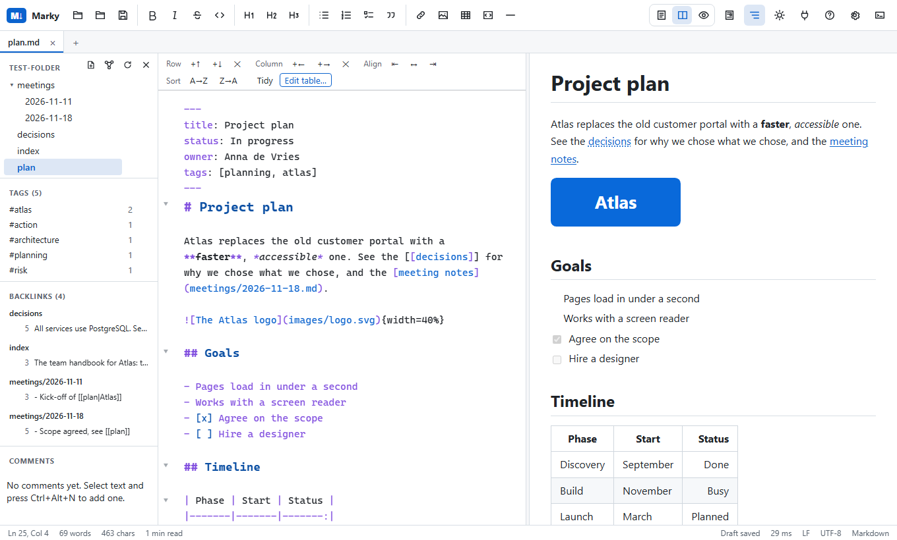
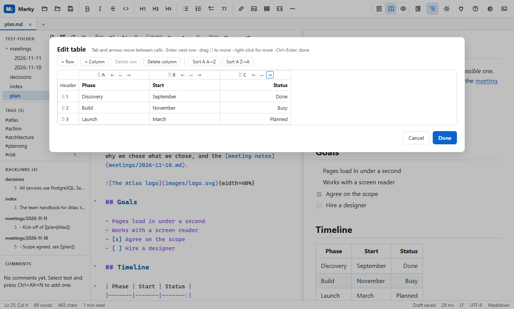

6. Tables
Writing a table
| Name | Role | Since |
|-------|-----------|------:|
| Anna | Editor | 2021 |
| Ben | Reviewer | 2023 |
The second line separates the header from the rows; a : on the right aligns a column right (:--- left, :---: centred). Insert table (toolbar or /table) starts one for you.
Typing in a table
While the cursor is in a table:
| Keys | What happens |
|---|---|
| Tab / Shift+Tab | Next / previous cell (Tab in the last cell adds a row) |
| Enter | The cell below (a new row at the bottom) |
| Alt+↑ / Alt+↓ | Move the row up / down |
| Alt+← / Alt+→ | Move the column left / right |
| Ctrl+Alt+F | Line up the columns |
A table bar appears above the table: add or remove rows and columns, align a column, sort by a column, and Edit table….

The visual table editor
Edit table… (or double-click the table in the preview) opens a grid you edit like a spreadsheet: click a cell and type, use the arrow keys, add and delete rows and columns, set alignment, sort. Paste cells straight from Excel or Google Sheets. Done writes the table back as Markdown.

From a spreadsheet or CSV
Copy cells in Excel or Google Sheets and paste them into the visual table editor. The CSV tables plugin (Plugins) draws ```csv blocks as tables.